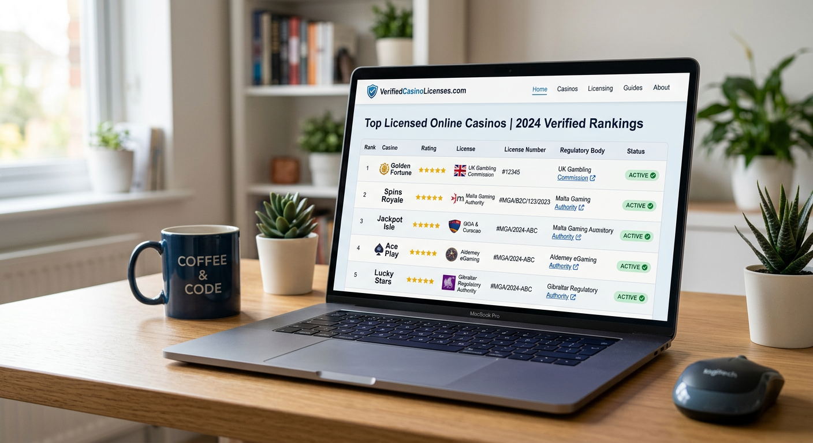
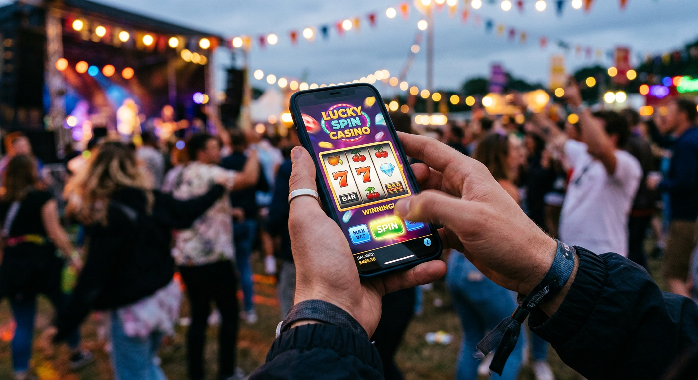
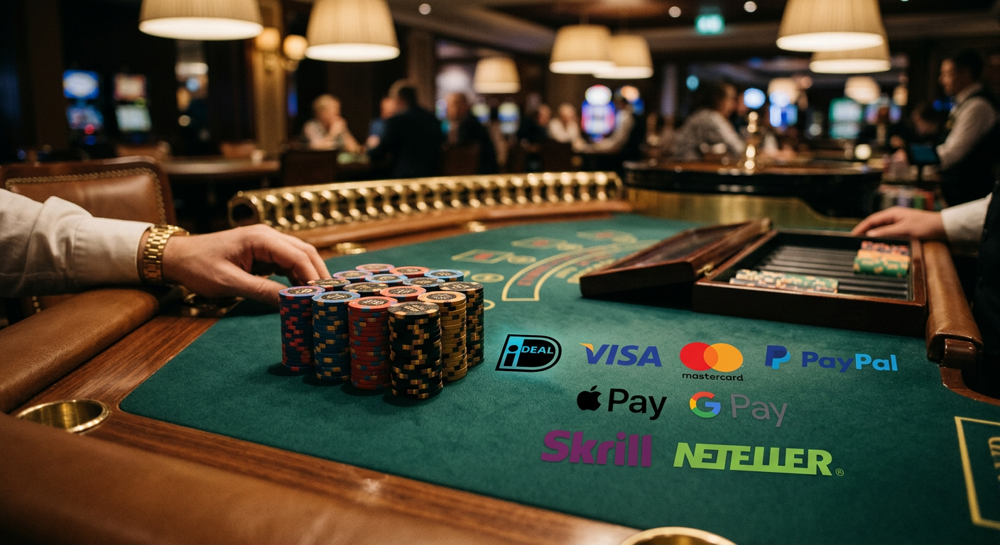

Online casino nederland legaal: Alles wat je moet weten over veilig gokken in 2026
Sinds de opening van de gereguleerde gokmarkt in 2021 is het landschap van kansspelen in Nederland drastisch veranderd. In 2026 zien we dat de markt volwassen is geworden, met een breed scala aan aanbieders die strijden om de gunst van de speler. Het vinden van een online casino nederland legaal is tegenwoordig eenvoudiger dan ooit, mits je weet waar je op moet letten. De veiligheid van spelers staat centraal, en de regelgeving vanuit de Kansspelautoriteit is in 2026 strenger maar ook duidelijker geworden.
Het jaar 2026 markeert een belangrijk punt in de geschiedenis van de Nederlandse goksector. Veel spelers hebben de overstap gemaakt van het illegale circuit naar platformen die beschikken over een officiële licentie. Een online casino nederland legaal biedt niet alleen bescherming tegen fraude, maar garandeert ook dat winsten daadwerkelijk worden uitbetaald. In dit uitgebreide artikel duiken we diep in de wereld van de Nederlandse kansspelmarkt, bekijken we de beste aanbieders van dit moment en leggen we uit hoe de wetgeving jouw speelervaring beïnvloedt.
Of je nu een ervaren high-roller bent of een recreatieve speler die af en toe een gokje waagt op een gokkast, het is cruciaal om te begrijpen wat een platform betrouwbaar maakt. We bespreken de rol van softwareleveranciers zoals Pragmatic Play en Evolution, de impact van het CRUKS-register en de opkomst van innovatieve betaalmethoden. Lees verder om alles te ontdekken over het spelen bij een online casino nederland legaal en hoe je jouw winstkansen kunt optimaliseren in een veilige omgeving.
Wat maakt een online casino in Nederland legaal?
De term "legaal" is in de Nederlandse gokwereld strikt gedefinieerd door de Wet Kansspelen op afstand (KOA). Een aanbieder mag zichzelf pas een online casino nederland legaal noemen wanneer deze in het bezit is van een vergunning verstrekt door de Kansspelautoriteit (KSA). Deze vergunning is niet eenvoudig te verkrijgen; bedrijven moeten voldoen aan honderden strenge eisen op het gebied van verslavingspreventie, financiële stabiliteit en eerlijkheid van de spellen. In 2026 is deze controle alleen maar intensiever geworden om de consument te beschermen.
Een cruciaal aspect van een online casino nederland legaal is de verplichte aansluiting bij het Centraal Register Uitsluiting Kansspelen (CRUKS). Dit systeem zorgt ervoor dat spelers die zichzelf willen beschermen tegen een gokverslaving, met één druk op de knop de toegang tot alle legale goksites kunnen ontzeggen. Bovendien moeten legale aanbieders hun spelsystemen laten keuren door onafhankelijke testlabs om te garanderen dat de RTP (Return to Player) percentages kloppen en dat de Random Number Generators (RNG) ook echt willekeurige resultaten produceren.
Naast de technische eisen speelt ook de marketing een grote rol. Sinds de strengere reclameregels die na 2024 zijn ingevoerd, mogen legale casino's in 2026 alleen nog op zeer gerichte wijze reclame maken. Dit voorkomt dat kwetsbare groepen onnodig worden blootgesteld aan gokuitingen. Wanneer je speelt bij een online casino nederland legaal, weet je dus dat de overheid over je schouder meekijkt om een eerlijk verloop te garanderen. Wil je meer weten over de juridische achtergrond van gokken, dan kun je hier meer informatie vinden over de Kansspelautoriteit op Wikipedia.
De rol van de Kansspelautoriteit (KSA)
De Kansspelautoriteit fungeert als de waakhond van de Nederlandse gokmarkt. Hun missie is drieledig: het beschermen van de consument, het voorkomen van gokverslaving en het bestrijden van illegaliteit en criminaliteit. Voor elk online casino nederland legaal is de KSA de hoogste autoriteit die bepaalt of een partij de markt mag betreden of juist moet verlaten. In 2026 deelt de KSA vaker boetes uit aan aanbieders die zich niet aan de zorgplicht houden, wat het belang van het kiezen voor een vergunde site onderstreept.
De KSA beheert ook de zogenaamde "Kansspelwijzer", een database waarin elke speler kan controleren of een specifieke website daadwerkelijk over de juiste papieren beschikt. Het is altijd verstandig om deze lijst te raadplegen voordat je geld stort. Een online casino nederland legaal zal altijd transparant zijn over hun licentienummer, dat meestal onderaan de homepage te vinden is. Dit nummer begint vaak met de letters "KSA" gevolgd door een reeks cijfers, wat direct vertrouwen geeft aan de Nederlandse speler.
Hoe herken je het officiële vergunningstempel?
Een handige manier om snel te zien of je op een veilige plek bent, is het controleren op het officiële keurmerk "Vergunninghouder Kansspelautoriteit". Dit logo is exclusief voorbehouden aan partijen die door de zware keuring zijn gekomen. Echter, malafide sites proberen dit soms te kopiëren. Daarom is het essentieel dat het logo klikbaar is en direct doorverwijst naar de officiële website van de KSA. In een online casino nederland legaal is dit proces naadloos geïntegreerd in de gebruikerservaring.
Daarnaast is de URL van de website vaak een goede indicatie. Legale aanbieders voor de Nederlandse markt gebruiken vrijwel altijd een .nl-extensie of hebben een specifieke Nederlandse sectie die volledig voldoet aan de lokale wetgeving. Let ook op de beschikbare taal; een online casino nederland legaal moet in 2026 de Nederlandse taal ondersteunen, althans in de algemene voorwaarden en bij de klantenservice, om de toegankelijkheid en duidelijkheid voor de burger te waarborgen.
Actuele lijst met vergunde aanbieders in 2026

Het aantal legale aanbieders is in 2026 stabieler dan in de beginjaren na de regulering. Terwijl sommige kleine partijen zijn samengegaan, zijn er ook sterke internationale merken bijgekomen. Gevestigde namen zoals BetCity, Jacks.nl en Toto blijven dominant aanwezig. Deze platforms hebben door de jaren heen een sterke reputatie opgebouwd door snelle uitbetalingen en een uitstekend spelaanbod. Een online casino nederland legaal kiezen betekent vaak kiezen tussen deze grote jongens of de nieuwere innovatieve spelers.
We zien ook dat merken zoals BetMGM en LeoVegas hun positie op de Nederlandse markt in 2026 hebben verstevigd. Zij maken veelal gebruik van geavanceerde software van Kambi voor hun Sportsbook-sectie, wat zorgt voor een soepele wedervaring. Het mooie van de huidige markt is dat er voor elk type speler wel een online casino nederland legaal te vinden is, of je nu houdt van bingo, poker, sportweddenschappen of live dealer games.
| Casino Merk | Specialiteit | Vergunning sinds | Rating (1-10) |
|---|---|---|---|
| Kansino | Grootste aanbod slots | 2021 | 9.2 |
| Holland Casino Online | Live Casino beleving | 2021 | 8.8 |
| Betnation | Hoge RTP slots | 2022 | 8.5 |
| One Casino | Exclusieve eigen spellen | 2022 | 8.7 |
| 711 | Bonussen en promoties | 2022 | 8.9 |
Gevestigde namen: Kansino, TOTO en Holland Casino Online
Kansino staat in 2026 nog steeds bekend als het online casino nederland legaal met de snelste uitbetalingen en een gigantisch aanbod aan slots van providers als Stakelogic en Pragmatic Play. Ze hebben ervoor gekozen om geen bonussen aan te bieden, maar te focussen op de pure speelervaring. Aan de andere kant hebben we Holland Casino Online, de digitale tak van het bekende staatscasino, dat uitblinkt in live tafelspellen met Nederlandse dealers. Dit brengt de vertrouwde sfeer van de fysieke vestiging direct naar je huiskamer.
TOTO, oorspronkelijk bekend van de voetbalweddenschappen, is uitgegroeid tot een volwaardig online casino nederland legaal. Dankzij hun jarenlange ervaring en betrouwbaarheid onder het Nederlandse publiek, weten ze precies wat de speler wil. Hun integratie van sportweddenschappen en casinogames onder één account maakt het een zeer gebruiksvriendelijk platform. Het is een prachtig voorbeeld van hoe een traditioneel merk succesvol kan transformeren in het digitale tijdperk van 2026.
Nieuwe spelers op de Nederlandse markt
Naast de oude garde zijn er in 2026 enkele opwindende nieuwe namen die de harten van spelers veroveren. Merken zoals Hard Rock Casino en Tonybet hebben na een langdurig proces eindelijk hun plek gevonden. Deze aanbieders brengen een internationale flair naar het online casino nederland legaal landschap. Ze onderscheiden zich vaak door unieke loyaliteitsprogramma's en innovatieve mobiele apps die het gokken onderweg nog makkelijker maken.
Een andere interessante ontwikkeling is de opkomst van gespecialiseerde sites. Zo is tombola nog steeds de onbetwiste koning van de bingo, terwijl partijen als GGPoker zich puur richten op de serieuze pokerspeler. Wanneer je zoekt naar een online casino nederland legaal, is het dus de moeite waard om te kijken naar jouw persoonlijke voorkeur voor spellen. De diversiteit in 2026 zorgt ervoor dat er voor iedere niche een perfecte match is.
Hieronder vind je een overzicht van enkele aanbevolen platforms die in 2026 hoge ogen gooien:
- Goldbet: Bekend om zijn uitstekende odds en snelle interface. Bezoek Goldbet voor een premium ervaring.
- Newlucky: Een frisse wind in de industrie met een focus op moderne gokkasten. Ontdek meer op Newlucky.
- Dragobet: De ideale plek voor liefhebbers van avontuurlijke thema's. Check Dragobet.
- Fortunicabet: Voor wie op zoek is naar exclusieve tafelspellen. Kijk op Fortunicabet.
- Spinorhino: Een speels platform met een enorm aanbod aan gratis spins. Probeer Spinorhino.
- Lizaro: Elegantie en stijl gecombineerd met topkwaliteit software. Bezoek Lizaro.
- Hidden Jack: Ontdek de verborgen schatten van dit unieke casino. Ga naar Hidden Jack.
Waarom kiezen voor een vergunde aanbieder?
Het antwoord lijkt simpel: veiligheid. Maar er zit veel meer achter de schermen van een online casino nederland legaal dan je op het eerste gezicht zou denken. Wanneer je speelt bij een niet-vergunde partij, loop je het risico dat je persoonlijke gegevens op straat komen te liggen of dat je winsten nooit worden overgemaakt. In 2026 is cybercriminaliteit een reëel gevaar, en legale casino's moeten investeren in de nieuwste encryptie-technologieën om hun spelers te beschermen tegen hackers en identiteitsfraude.
Daarnaast is er de garantie op eerlijk spel. In een online casino nederland legaal worden alle spellen regelmatig gecontroleerd door instanties als eCOGRA of iTech Labs. Dit betekent dat als een gokkast aangeeft een RTP van 96% te hebben, dit ook daadwerkelijk het geval is over miljoenen spins. Bij illegale sites kan dit percentage gemanipuleerd zijn, waardoor je op de lange termijn veel meer verliest dan nodig is. De gemoedsrust die een licentie biedt, is voor veel spelers de belangrijkste reden om nooit meer "buiten de deur" te gokken.
Tot slot biedt een online casino nederland legaal juridische bescherming. Mocht er een geschil ontstaan over een uitbetaling of een technische fout tijdens het spelen, dan kun je rekenen op een transparante klachtenprocedure. De KSA kan in extreme gevallen zelfs bemiddelen. Bij een buitenlandse site zonder vergunning sta je in zo'n situatie vaak machteloos. Het kiezen voor een 1 euro deposit casino dat legaal is, zorgt ervoor dat zelfs de kleinste stortingen met zorg worden behandeld.
Bescherming van je persoonlijke gegevens
In het tijdperk van Big Data is privacy goud waard. Een online casino nederland legaal moet voldoen aan de AVG (Algemene Verordening Gegevensbescherming). Dit betekent dat zij je data niet zomaar mogen doorverkopen aan marketingbureaus of andere derden. Bovendien wordt de verificatie van je identiteit in 2026 vaak afgehandeld via iDIN, een veilige methode die gekoppeld is aan je bank. Hierdoor hoef je geen kopieën van je paspoort over de mail te sturen, wat de kans op onderschepping minimaliseert.
Spelen bij een online casino nederland legaal betekent ook dat je bankgegevens veilig zijn. Betalingen verlopen via streng beveiligde gateways, waarbij iDEAL de absolute voorkeur geniet. De financiële stromen worden gemonitord om witwassen tegen te gaan, wat weer bijdraagt aan een gezondere samenleving. Kortom, de achterkant van een legaal platform is een fort dat gebouwd is om jou als consument een zorgeloze tijd te bieden.
Eerlijk verloop van casinospellen
Niets is frustrerender dan het gevoel hebben dat een spel "gefixed" is. Bij een online casino nederland legaal is dat simpelweg onmogelijk vanwege de strenge software-eisen. Providers zoals Evolution voor het live casino en NetEnt voor de slots moeten elk spel afzonderlijk laten certificeren voor de Nederlandse markt. Dit zorgt voor een gelijk speelveld waar de winstkansen voor iedereen hetzelfde zijn, ongeacht de inzet. In 2026 is de technologie achter deze controles zelfs nog geavanceerder geworden, met real-time monitoring van speldata.
Het concept van RTP is hierbij cruciaal. Een online casino nederland legaal zal altijd duidelijk communiceren wat de verwachte terugbetaling aan de speler is. Dit stelt je in staat om bewuste keuzes te maken. Wil je een spel met een lage volatiliteit waarbij je vaak kleine bedragen wint, of ga je voor de hoge volatiliteit van een jackpot-kast? De transparantie die legale casino's bieden, helpt je bij het bepalen van je eigen strategie zonder verborgen addertjes onder het gras.
Het belang van CRUKS en verantwoord spelen
Verantwoord spelen is in 2026 het paradepaardje van de Nederlandse overheid. Elk online casino nederland legaal heeft een uitgebreid systeem voor verslavingspreventie. Dit begint al bij de registratie, waarbij je verplicht limieten moet instellen voor je dagelijkse, wekelijkse en maandelijkse stortingen, evenals de tijd die je op het platform doorbrengt. Deze limieten zijn er niet om je te pesten, maar om je te helpen binnen je budget te blijven. In 2026 zien we dat kunstmatige intelligentie wordt ingezet om risicovol speelgedrag vroegtijdig te signaleren.
CRUKS (Centraal Register Uitsluiting Kansspelen) is de ultieme veiligheidsgordel. Als je merkt dat het gokken geen plezier meer brengt of dat je meer uitgeeft dan je kunt missen, kun je jezelf registreren in dit landelijke register. Een online casino nederland legaal zal je direct de toegang ontzeggen tot de website, en dit geldt ook voor fysieke casino's in het hele land. Deze integrale aanpak is uniek in de wereld en heeft al duizenden Nederlanders geholpen om weer grip op hun leven te krijgen. Het is een essentieel onderdeel van het sociale contract tussen de aanbieder en de maatschappij.
Naast CRUKS bieden legale casino's vaak directe links naar hulpinstanties zoals het Loket Kansspel. De medewerkers van de klantenservice van een online casino nederland legaal zijn bovendien speciaal getraind om signalen van gokverslaving te herkennen en het gesprek aan te gaan met de speler. In 2026 is de zorgplicht van casino's verder aangescherpt; passiviteit bij overmatig speelgedrag kan leiden tot het intrekken van de vergunning. Dit dwingt casino's om echt om hun klanten te geven, in plaats van alleen naar de winstcijfers te kijken.
Mobiel gokken zonder Cruks

Hoewel CRUKS een geweldig systeem is voor wie bescherming nodig heeft, is er in 2026 ook een groeiende discussie over mobiel gokken zonder Cruks. Sommige spelers ervaren het systeem als te beperkend of zijn onterecht geregistreerd. Het is echter belangrijk om te benadrukken dat het omzeilen van CRUKS risico's met zich meebrengt. Vaak kom je dan terecht bij buitenlandse casino's die geen Nederlandse licentie hebben. Dit betekent dat je de eerder genoemde beschermingen van een online casino nederland legaal opgeeft.
Toch zoeken veel mensen naar een casino zonder cruks omdat ze meer vrijheid willen in hun speellimieten of omdat ze gebruik willen maken van betaalmethoden zoals crypto, die in Nederland nog niet overal toegestaan zijn bij legale aanbieders. In 2026 zien we dat de KSA hard optreedt tegen websites die zich specifiek richten op Nederlanders die in het CRUKS-register staan. De veiligste weg blijft altijd het spelen bij een online casino nederland legaal, waar je zelf je limieten kunt beheren binnen een gecontroleerd kader.
De term "mobiel gokken" is in 2026 de standaard geworden. Meer dan 80% van de acties in een online casino nederland legaal vindt plaats op een smartphone. De apps zijn zo geavanceerd dat ze bijna niet meer onderdoen voor de desktop-ervaring. Of je nu in de trein zit of op de bank ligt, je hebt altijd toegang tot je favoriete spellen. Zolang je dit doet bij een vergunde aanbieder, blijft je ervaring veilig, ongeacht of je nu bewust zoekt naar manieren voor mobiel gokken zonder Cruks of trouw blijft aan de Nederlandse regelgeving.
Populaire betaalmethoden bij legale goksites

Een van de grootste voordelen van een online casino nederland legaal is de integratie van vertrouwde betaalmethoden. In Nederland is iDEAL nog steeds heer en meester. Het is snel, veilig en direct gekoppeld aan je eigen bankomgeving. In 2026 is iDEAL 2.0 uitgerold, wat de transacties nog soepeler maakt. Geen gedoe meer met paslezers, maar simpelweg bevestigen met je vingerafdruk of gezichtsherkenning op je telefoon. Dit verhoogt niet alleen het gemak, maar ook de veiligheid van je stortingen bij een online casino nederland legaal.
Naast iDEAL zien we een toename in het gebruik van creditcards zoals Visa en Mastercard, en e-wallets zoals PayPal. Het mooie aan een online casino nederland legaal is dat zij geen extra kosten in rekening mogen brengen voor deze transacties. Bovendien moeten zij voldoen aan strenge regels rondom uitbetalingen. Waar je vroeger dagen moest wachten op je geld, staat in 2026 je winst bij de meeste topcasino's binnen enkele minuten op je rekening. Dit noemen we "instant payouts", en het is een standaard verwachting geworden van de moderne Nederlandse gokker.
iDEAL: De standaard voor Nederlandse spelers
Zonder iDEAL is een online casino nederland legaal eigenlijk ondenkbaar. Het biedt een drempelloze ervaring die precies past bij de behoeften van de Nederlander. Omdat de betaling direct via je bank verloopt, krijgt het casino nooit je gevoelige bankgegevens te zien. Dit verlaagt het risico op diefstal van gegevens aanzienlijk. In 2026 ondersteunen alle grote banken, van ING tot Rabobank en ABN Amro, naadloze koppelingen met de vergunde goksites.
Het gebruik van iDEAL helpt ook bij het bijhouden van je uitgaven. Omdat elke transactie direct op je bankafschrift verschijnt, heb je een goed overzicht van hoeveel je precies besteedt aan je hobby. Een online casino nederland legaal promoot het gebruik van iDEAL ook vanwege de snelheid; het geld is onmiddellijk beschikbaar om mee te spelen, waardoor de flow van het spel niet wordt onderbroken. Voor wie op zoek is naar de beste deals, is een no deposit bonus casino nederland vaak een mooie manier om te beginnen zonder direct iDEAL te hoeven gebruiken.
Snelle uitbetalingen en limieten
Niets is zo bevredigend als een mooie winst die direct op je rekening verschijnt. In 2026 hebben aanbieders als Kansino en BetCity de lat hoog gelegd met hun razendsnelle verwerkingstijden. Bij een online casino nederland legaal hoef je vaak niet langer dan 15 minuten te wachten. Dit is een enorm verschil met de illegale markt, waar uitbetalingen soms weken kunnen duren of zelfs helemaal geannuleerd worden onder vage voorwendselen.
Wat betreft de limieten: deze zijn bij een online casino nederland legaal transparant. Er zijn minimale stortingsbedragen (vaak vanaf 5 of 10 euro) en maximale uitbetalingslimieten per dag of maand. Deze limieten zijn mede ingegeven door anti-witwaswetgeving (Wwft). Als speler is het prettig om te weten dat je grote winsten zonder problemen kunt laten uitkeren, zolang je account geverifieerd is. De betrouwbaarheid van de financiële afwikkeling is misschien wel de sterkste troef van de Nederlandse licentiehouders.
Welkomstbonus bij legale platformen
In 2026 zijn bonussen nog steeds een populair middel om nieuwe spelers aan te trekken, maar de regels eromheen zijn strikter dan ooit. Een online casino nederland legaal mag geen bonussen aanbieden aan personen jonger dan 24 jaar. Dit is een bewuste keuze van de overheid om jongvolwassenen te beschermen. Daarnaast moeten de bonusvoorwaarden kristalhelder zijn. Geen kleine lettertjes meer waarin staat dat je je bonus 100 keer moet rondspelen; in 2026 zijn rondspeelvoorwaarden van 20x tot 35x de norm bij een online casino nederland legaal.
Veel voorkomende bonussen zijn de stortingsbonus, waarbij je eerste storting wordt verdubbeld, en gratis spins op populaire gokkasten van Pragmatic Play of Stakelogic. Sommige casino's kiezen voor een cashback-model, hoewel dit door de KSA streng wordt gemonitord om te voorkomen dat het spelers aanzet tot meer gokken om hun verlies "terug te verdienen". Bij een online casino nederland legaal staat eerlijkheid voorop, dus je kunt er vanuit gaan dat de bonus die je ziet, ook daadwerkelijk haalbaar is.
Voor wie op zoek is naar iets nieuws, is de nieuwe online casino markt in 2026 zeer interessant. Nieuwe aanbieders proberen vaak de gevestigde orde uit te dagen met zeer aantrekkelijke welkomstpakketten. Denk aan een combinatie van een hoge geldbonus en honderden spins op een nieuwe release van Evolution. Het is altijd de moeite waard om de actuele aanbiedingen te vergelijken, zolang je er maar voor zorgt dat je bij een online casino nederland legaal blijft spelen.
Spelaanbod in het legale circuit
Het spelaanbod bij een online casino nederland legaal is in 2026 indrukwekkender dan ooit. Dankzij samenwerkingen met wereldwijde top-ontwikkelaars zoals Entain, NetEnt en Pragmatic Play, hebben Nederlandse spelers toegang tot duizenden verschillende games. Van de klassieke fruitautomaten die we kennen uit de horeca tot hypermoderne video slots met duizenden winlijnen (Megaways). De diversiteit zorgt ervoor dat de verveling nooit toeslaat bij een online casino nederland legaal.
Naast slots is het live casino een enorme trekpleister. Hier speel je tegen echte dealers die zich in speciaal ingerichte studio's bevinden. In 2026 bieden veel legale casino's zelfs exclusieve Nederlandse tafels aan voor Roulette en Blackjack. Dit maakt de ervaring een stuk persoonlijker. Ook game shows zoals Crazy Time of Lightning Roulette van Evolution zijn razend populair. Deze spellen combineren het element van een spelshow met de spanning van het casino, allemaal binnen de veilige muren van een online casino nederland legaal.
Voor de sportliefhebbers is er het Sportsbook. Of je nu wilt wedden op de Eredivisie, de Formule 1 of Amerikaanse sporten als de NBA, de mogelijkheden zijn eindeloos. Grote namen als BetMGM, Jack's en Unibet bieden uitgebreide statistieken en live betting opties. De odds zijn bij een online casino nederland legaal concurrerend, en door de regulering weet je zeker dat de uitslagen eerlijk worden verwerkt. Ook hier zien we de invloed van technologiebedrijven als Kambi, die de backbone vormen voor veel van deze platforms.
Technische aspecten: RTP en Software
Achter de glimmende graphics van een online casino nederland legaal schuilt complexe techniek. Een van de belangrijkste termen die je moet kennen is RTP (Return to Player). Dit getal geeft aan hoeveel van de totale inleg over een lange periode wordt terugbetaald aan de spelers. Een online casino nederland legaal heeft meestal spellen met een RTP tussen de 94% en 98%. In 2026 is het verplicht om dit percentage per spel duidelijk te vermelden, zodat je als speler precies weet waar je aan toe bent.
De softwareproviders spelen een cruciale rol in deze keten. Namen als Stakelogic, Play'n GO en Pragmatic Play zijn synoniem voor kwaliteit en eerlijkheid. Zij leveren de games aan het online casino nederland legaal, maar het casino zelf heeft geen invloed op de uitkomst van de spins. Alles wordt geregeld door de RNG (Random Number Generator). In 2026 worden deze systemen continu gemonitord door onafhankelijke instanties om elke vorm van manipulatie uit te sluiten. Dit is de technologische garantie die je alleen krijgt bij een vergunde aanbieder.
Bovendien is de stabiliteit van het platform essentieel. Niets is vervelender dan een spel dat vastloopt net wanneer je een bonusronde ingaat. Een modern online casino nederland legaal investeert miljoenen in hun infrastructuur om een vlekkeloze ervaring te bieden op zowel desktop als mobiel. Mocht er toch iets misgaan, dan zorgt de server-side technologie ervoor dat je voortgang wordt opgeslagen en je geen cent verliest. Dit niveau van professionaliteit vind je zelden terug op de ongereguleerde markt.
Is het legaal? De juridische status in 2026
De vraag "Is het legaal?" wordt in 2026 nog steeds vaak gesteld door nieuwe spelers. Het antwoord is: ja, mits de website beschikt over de juiste KSA-vergunning. Het is in Nederland verboden voor bedrijven om zonder deze licentie kansspelen aan te bieden aan de Nederlandse bevolking. Ook als speler ben je in theorie strafbaar als je gokt bij een illegaal platform, al ligt de focus van de handhaving vooral bij de aanbieders. Kiezen voor een online casino nederland legaal is dus niet alleen veiliger, maar ook de enige manier om binnen de wet te blijven.
De juridische kaders zijn in 2026 verder aangescherpt om consumenten nog beter te beschermen. Zo zijn er strengere regels gekomen voor "lure" advertenties en is de zorgplicht uitgebreid naar de fysieke omgeving van de speler. Een online casino nederland legaal moet kunnen aantonen dat zij actief bijdragen aan het voorkomen van witwassen en financiering van terrorisme. Dit klinkt misschien zwaar, maar voor jou als speler betekent het simpelweg dat je in een schone, betrouwbare omgeving je favoriete hobby kunt uitoefenen.
Wil je meer weten over de actuele wetgeving en hoe de overheid gokken reguleert? De officiële website van de overheid biedt een schat aan informatie. Je kunt hier de regels over kansspelen bekijken op Rijksoverheid.nl. Het is altijd goed om jezelf te informeren over je rechten en plichten als je besluit te gaan spelen bij een online casino nederland legaal. Kennis is macht, zeker als het gaat om je eigen geld en veiligheid.
Vergelijking van topaanbieders
Om je te helpen bij het maken van een keuze, hebben we in 2026 een overzicht gemaakt van hoe de verschillende partijen zich tot elkaar verhouden. Elk online casino nederland legaal heeft zijn eigen sterke en zwakke punten. Waar de één uitblinkt in bonussen, focust de ander zich op een razendsnelle website of een specifiek spelaanbod zoals poker of bingo. In de onderstaande tabel zie je de belangrijkste kenmerken op een rij.
| Casino | Belangrijkste Troef | Software Partner | Uitbetalingssnelheid |
|---|---|---|---|
| BetMGM | Loyalty rewards | Kambi | Instant |
| LeoVegas | Beste Mobiele App | Verschillende | < 24 uur |
| Jacks.nl | Combinatie Casino/Sports | Evolution | Instant |
| Tonybet | Grootste Sportsbook | Eigen software | 1-2 dagen |
| Winz | Crypto-vriendelijk (indien toegestaan) | Verschillende | Instant |
Zoals je ziet, is de concurrentie moordend. Dit is alleen maar gunstig voor jou als consument, want een online casino nederland legaal moet constant innoveren om relevant te blijven. Of je nu kiest voor de gevestigde namen of de uitdagers zoals Lucky 7 Casino of Starcasino, je kunt rekenen op een hoogwaardige ervaring die voldoet aan alle Nederlandse standaarden van 2026.
De toekomst van online gokken in Nederland
Kijkend naar de rest van 2026 en daarna, verwachten we dat technologie een nog grotere rol gaat spelen. Virtual Reality (VR) casino's beginnen langzaam hun intrede te maken, waarbij je met een headset op door een virtueel online casino nederland legaal kunt lopen. Ook de integratie van sociale elementen, waarbij je samen met vrienden aan een tafel kunt zitten terwijl je op afstand bent, is in opkomst. De grens tussen gaming en gambling vervaagt steeds verder.
Daarnaast zal de focus op duurzaamheid en maatschappelijk verantwoord ondernemen (MVO) toenemen. Een online casino nederland legaal zal in de toekomst vaker beoordeeld worden op hun bijdrage aan de sportwereld en lokale gemeenschappen. We zien nu al dat veel casino's als sponsor optreden voor grote sportclubs en evenementen. Dit draagt bij aan de acceptatie van de sector in de brede samenleving. De Nederlandse gokmarkt van 2026 is een voorbeeld voor veel andere Europese landen die hun markt nog moeten reguleren.
Kortom, de markt voor een online casino nederland legaal is dynamischer dan ooit. Met een sterke focus op veiligheid, innovatie en speelplezier is het voor de Nederlandse gokker een gouden tijd. Zolang je kiest voor een vergunde aanbieder en je eigen grenzen bewaakt, kun je op een verantwoorde manier genieten van alles wat de digitale casinowereld te bieden heeft. Vergeet niet om altijd de laatste updates te checken op betrouwbare nieuwsbronnen zoals de BBC voor internationaal goknieuws en trends.
Veelgestelde vragen over legale online casino's
Omdat er veel informatie op je afkomt, hebben we de meest gestelde vragen over een online casino nederland legaal voor je op een rij gezet. Deze vragen zijn gebaseerd op de meest voorkomende onduidelijkheden bij spelers in 2026.
Is winst bij een legaal casino belastingvrij?
In 2026 hoef je als speler bij een online casino nederland legaal meestal geen kansspelbelasting meer te betalen over je winsten. De aanbieder draagt deze belasting direct af aan de fiscus over het bruto spelresultaat. Dit is een groot voordeel ten opzichte van vroeger, toen je zelf aangifte moest doen van grote prijzen.
Hoe lang duurt een verificatieproces?
Dankzij iDIN en geautomatiseerde systemen is de verificatie bij een online casino nederland legaal vaak binnen enkele minuten voltooid. Alleen in uitzonderlijke gevallen, bijvoorbeeld bij zeer grote stortingen, kan een handmatige check nodig zijn die iets langer duurt.
Kan ik ook met Bitcoin betalen?
Bij de meeste aanbieders van een online casino nederland legaal is direct betalen met crypto in 2026 nog steeds beperkt vanwege de strenge anti-witwasregels. Echter, sommige platforms maken gebruik van tussenpartijen waardoor het indirect mogelijk is. De voorkeur blijft echter uitgaan naar euro-transacties via iDEAL.
Wat als ik mezelf wil uitsluiten?
Elk online casino nederland legaal is verplicht om een "self-exclusion" optie te bieden. Daarnaast kun je je inschrijven bij CRUKS voor een algehele uitsluiting bij alle legale casino's in Nederland voor een periode van minimaal 6 maanden.
Het landschap van de Nederlandse gokmarkt blijft in beweging. Of je nu op zoek bent naar de hoogste bonussen, de snelste uitbetalingen of het meest diverse spelaanbod, de keuze voor een online casino nederland legaal is de enige juiste. In 2026 is de markt veiliger, leuker en transparanter dan ooit tevoren. Veel succes en speel verantwoord!

Expert in online casino's en digitaal gokken met meer dan 8 jaar ervaring in de sector.